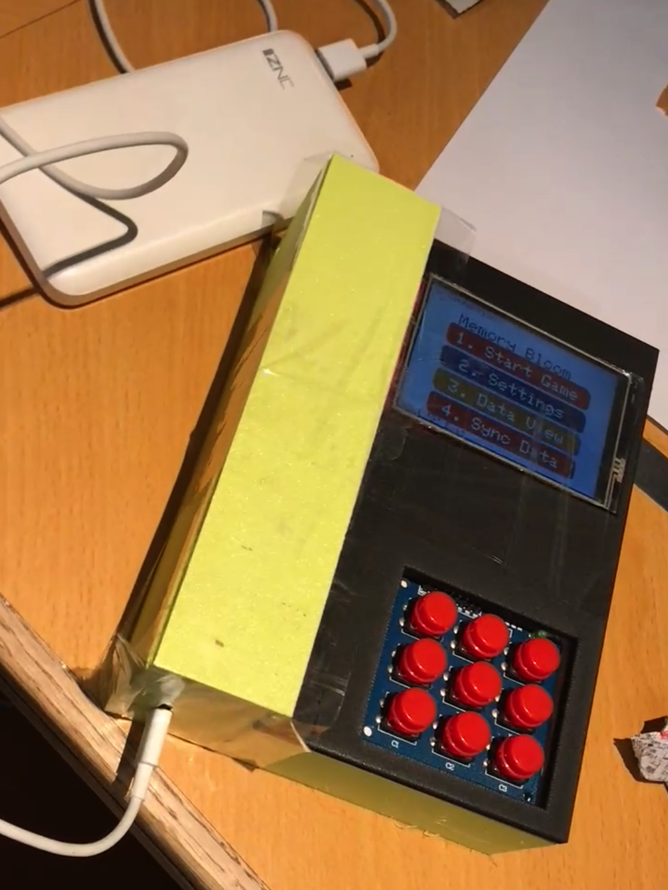
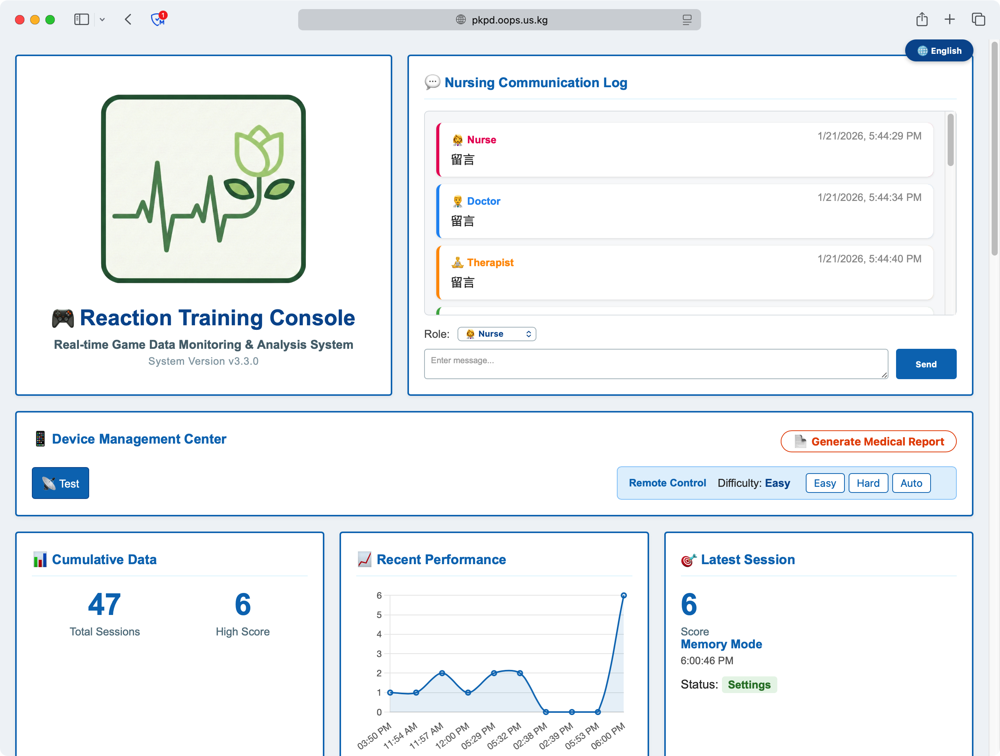
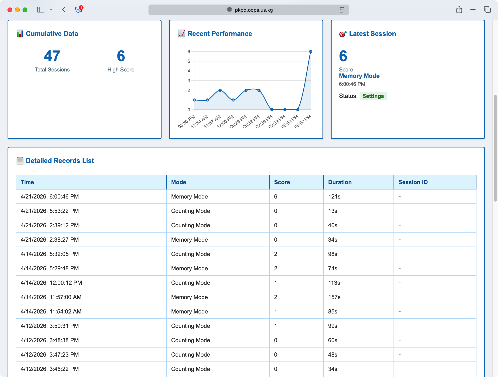
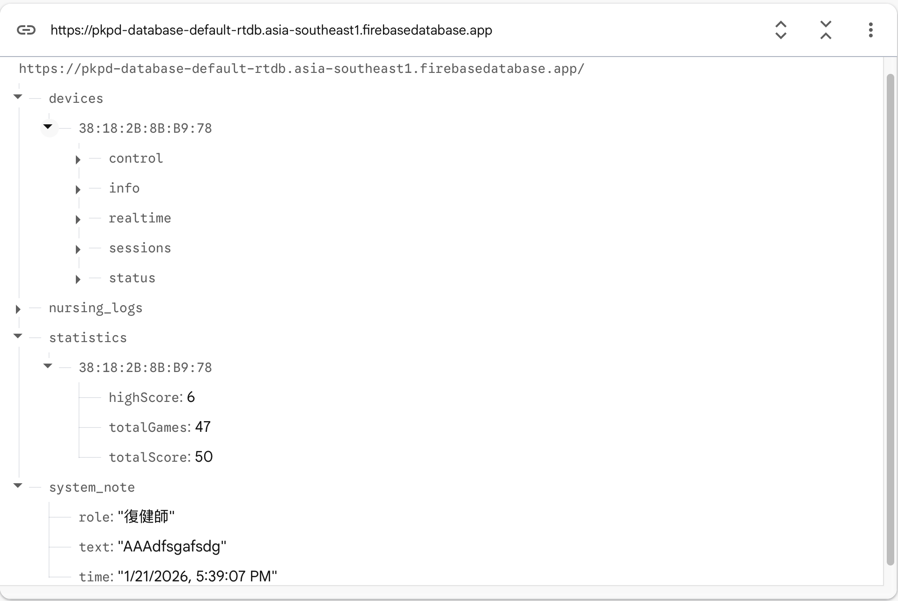

為什麼想做這個？
隨著全球人口高齡化，認知衰退與反應速度下降已成為嚴峻的挑戰。根據世界衛生組織（2025），60 歲以上人口將在未來幾年內倍增；而跌倒更是老年人受傷的主因，醫療成本高昂。傳統的復健方式多為重複性、枯燥的紙筆或單純觸控螢幕遊戲，缺乏互動性與即時反饋，難以維持患者的參與意願。
所以我們希望打造一台專為銀髮族設計的反應訓練主機。通過使用實體按鍵、直觀的視覺化介面與雲端數據追蹤，讓復健變得有趣且數據可量化。而且這臺裝置必須能離線運作、延遲極低、操作符合直覺，並能自動記錄訓練數據。
如何實現目標？
硬體設計
核心採用 ESP32 微控制器，搭配 3.5 吋 TFT 觸控螢幕（ILI9341）與 3x3 實體矩陣鍵盤。我們設計了符合人體工學的 3D 列印外殼，將按鍵加大（直徑 > 1.2 cm）、間距加寬；顯示採用高對比度 UI 與可調字型大小，確保視力退化的長者也能輕鬆操作。
外殼左側增設防滑握把，避免遊戲過程中不慎掉落；內部強化按鍵支撐結構，防止反覆按壓導致變形。

韌體與遊戲邏輯
我們在 ESP32 上使用 FreeRTOS 實現多任務處理（輸入掃描、遊戲邏輯、UI 渲染），確保按鍵延遲低於 100ms。內建兩款遊戲：記憶遊戲（依序重複亮起的按鈕序列）與計數遊戲（計算螢幕上圖形數量並按對應次數）。遊戲難度分為「簡單」、「困難」與「自動」三種模式，自動模式會根據玩家表現動態調整。
所有遊戲數據（分數、反應時間、模式）都會儲存在本地 NVS（非揮發性記憶體），當 Wi-Fi 可用時自動同步至 Firebase Realtime Database。
雲端儀表板
我們開發了一個 Web Dashboard（React + Chart.js），可視化玩家的訓練記錄。醫護人員或家屬能透過此儀表板查看累計場次、最高分、近期表現趨勢，並匯出 PDF 報告。儀表板也包含護理日誌功能，方便記錄觀察與建議。


測試與成果
我們進行了完整的單元測試與系統整合測試，涵蓋按鍵響應、離線儲存、Wi-Fi 連線與雲端同步。結果顯示：
- ✅ 按鍵延遲穩定在 60ms 以內
- ✅ 離線時數據完整保存，連線後自動補傳
- ✅ 高對比度模式與大字體切換順暢
- ✅ 儀表板即時呈現最新訓練記錄

技術挑戰與解決方案
圖形庫相容性與 SPI 時序
初期使用 LVGL 搭配 TFT_eSPI 失敗，導致白屏。最後切換至 Adafruit_GFX + Adafruit_ILI9341，並參考開源專案調整 SPI 腳位（CS=5, DC=17, RST=16），成功驅動螢幕。同時修正了 FreeRTOS 互斥鎖造成的死結問題。
非阻塞式延遲
記憶遊戲中需連續顯示燈號序列，若使用 `delay()` 會阻斷按鍵掃描。我們改用 `millis()` 實現非阻塞計時，確保玩家可隨時按下按鈕中斷或退出。
離線數據序列化
ESP32 的 Preferences 庫不支援結構體儲存，我們將遊戲記錄序列化為 17 位元組的緩衝區，利用 `putBytes()` 寫入 NVS，讀取時反序列化，實現在無網路環境下數據不流失。
未來展望
- 全球排行榜與社交功能（透過 Firebase 擴展）
- 語音引導指令（整合 TTS）
- 內建鋰電池，實現無線攜帶
- 導入機器學習模型，提供個人化難度預測
致謝
感謝指導老師 Sunny Wan 先生、HKU SPACE CC 實驗室提供設備，以及所有協助測試的家人與開源社群貢獻者。